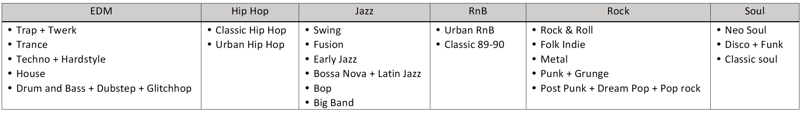
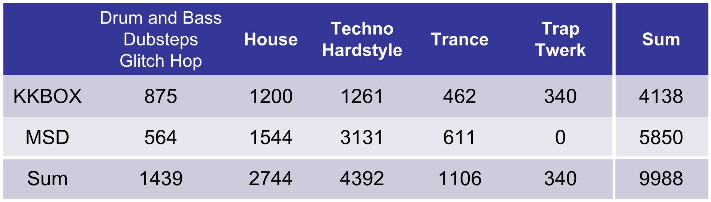
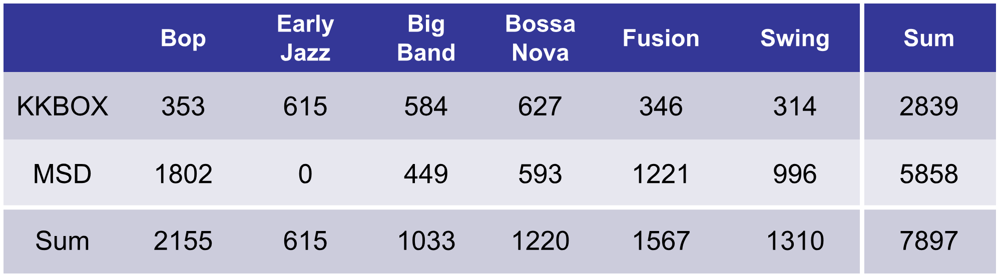

Description
In this project, we focus on both music genre and subgenre tagging. For example, given a song from Charlie Parker, except for telling us the song is belong to Jazz, the model will also tell us the song is belong to Swing and Bebop. Subgenre tagging is important for not only music recommendation, but also hit song prediction and many retrieval problems. However, little work has been done to subgenre tagging. In this work, we combine Million Song Dataset(MSD) and KKBOX private genre Dataset to train a convolutional neural network for genre/subgenre tagging. Our training data can be divided into six genre categories and twenty-four subgenre categories. More statistic result can be found here.
Dataset
Genre and subgenre.
EDM data distribution.
Jazz data distribution.
Model Structure
Two model structures are proposed for the genre taggings. We extract the highlight(HL) 30 seconds of each song by using HL extractor as the input feature.Model [1] contains four convolution layers and two fully convolution layers for the final prediction.
Model [2] is based on the fusion convolution network proposed by Pons et al. Time subnet and frequency subnet are responsible for extracting time and frequency related features. The extracted features are then merged through fully-connected layer for the final prediction.
Result
We show the F1-score of Jazz and EDM prediction result. F1-score is calculated for each subgenre separately.EDM prediction result.
Jazz prediction result.